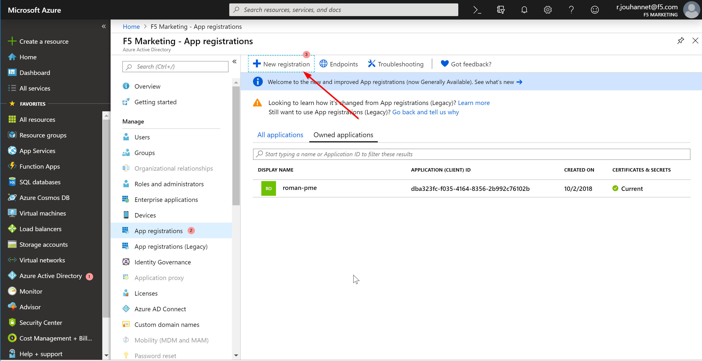

F5 BIG-IQ & Cloud Edition Lab > Class 2: BIG-IQ Deployment with auto-scale on AWS, Azure & VMware (Cloud Edition) > Module 5: Setup a Service scaling group (SSG) in Azure Source | Edit on
Lab 5.1: Prepare your Azure deployment¶
Warning
The SSG will be automatically delete 23h after the deployment was started.
In module1/Lab 1.1, we saw the different components to setup a SSG:
License PoolIP PoolsDevice TemplateCloud ProviderCloud Environment
When you want to deploy a SSG in Azure, you don’t need to provide the same amount of information:
A
License Poolis not mandatory. We are free to useUtility Billing(pay-per-use) inAZUREIP Poolsare not needed. When we deploy aSSGinAZURE, the deployedVirtual Edition(s)will be using our single NIC deployment. It means that we use one interface for management and traffic processing. In this case, the IP Address assigned to the device will be picked automatically byAZURE
To deploy our SSG in Azure, we will need to do a few things:
Setup an
Service Principal Accountthat will allow us to setup ourSSGvia theAzureAPI
Once this is done, we will be able to deploy our SSG. We will rely on some ansible scripts to:
Create a VNET, subnets, …
Deploy an APP in
AzureSetup an
Azure VPNconnection between ourUDFenvironment and this newly deployedAzure VNET
Note
in this lab, we consider that you have access to Azure. We won’t cover this topic.
Setting up a Service Principal Account¶
Note
Needs to be done by an admin in the subscription
Registering an application

On the Azure portal, go to Azure Active Directory → App registrations
Click on “+ New registration”
Enter the following values Name: <Name of the application>
Click Create
{kind=link}
Click on Certificates & secrets → New client secret
Enter a Description and select Expiration period.

Adding additional Application Owners
On the Azure portal, go to Azure Active Directory → App registrations → <the app you created in Registering an application>
Click on Settings → Owners → Add owner
Enter the user’s F5 email address to search
Select the user and Click on Select

Generating Service Principal Secret
On the Azure portal, go to Azure Active Directory → App registrations → <the app you created in Registering an application>
Click on Settings → Keys
Enter the user’s name in the Description field and select “Never Expires” for the duration
Click on Save
Copy the Value field and save it somewhere. This will need to be provided to the user to be able to configure an Azure provider in BIG-IQ

Granting access control to the application
On the Azure portal, go to Azure Active Directory → All Services
Click on Subscriptions
Click on the subscription that you are using for the application
Click on Access Control (IAM)
Click on Add
Select Role Assignment
Select “Contributor” in the drop down for the Role
Type in the Application name created in Step 1.
Click on Save

Credentials needed for configuring Azure Provider in BIG-IQ
The following pieces of information is needed to configure an Azure Provider. This information is required to make API calls to Azure for resource CRUD operations, either through Java or through Ansible.
Subscription Id: You can get this by clicking on Subscriptions in Azure portal and copying the Subscription Id for the f5-AZR_7801_PTG_MANOVA-Dev subscription
Tenant Id: Go to Azure Active Directory → Properties and copy the value of the Directory ID. This is the tenant Id.
Client Id: Go to Azure Active Directory → App registrations and copy the value of the Application ID. This is the client ID.
Service Principal Secret: Copy the value saved in step 5 of Generating Service Principal Secret
Warning
we need something unique for the User name since other student will do the lab and you may use same Azure corporate account.
Subscribe to the BIG-IP instance in the Azure MArketplace¶
Before being able to deploy an instance in Azure, you’ll have to subscribe to this license agreement
Go here to subscribe to the right F5 instance we will use in this lab:
F5 BIG-IP VE – ALL (BYOL, 1 Boot Location)
Once you’ve subscribed, you should see something like this:

{kind=link}